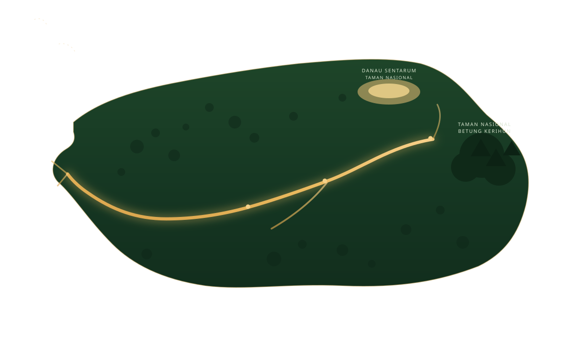

Kapuas: Menyusuri Narasi
di Sungai Terpanjang
Indonesia

PETA WILAYAH
Pilih Destinasi
Telusuri urat emas Sungai Kapuas — pilih sebuah kabupaten untuk mengungkap rahasia hulu, warisan, dan biodiversitasnya.